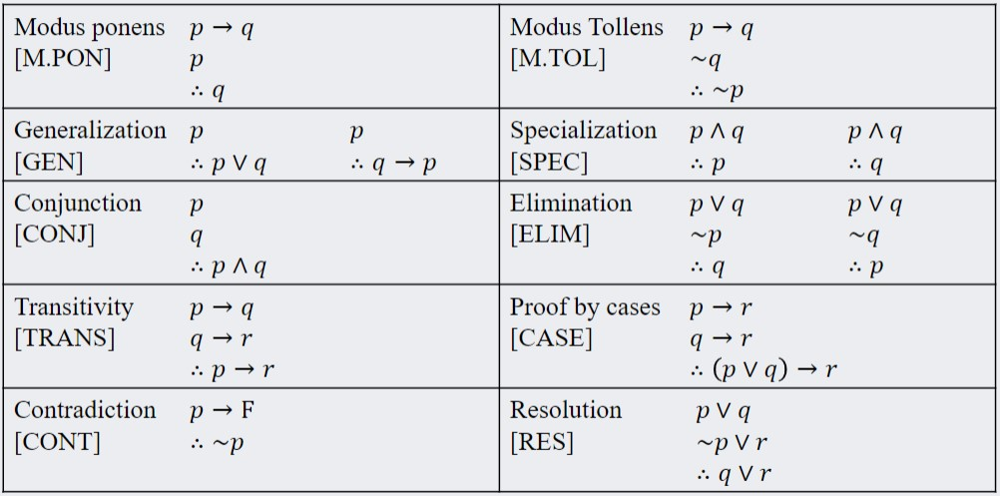
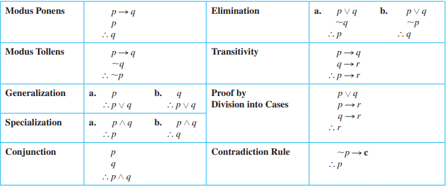

Use truth tables to establish or refute the validity of a rule of inference.
Given a rule of inference and propositional logic statements that correspond to the rule’s premises, apply the rule to infer a new statement implied by the original statements.
Determine whether or not a propositional logic proof is valid, and explain why it is valid or invalid.
Explore the consequences of a set of propositional logic statements by application of equivalence and inference rules, especially in order to massage statements into a desired form.
Devise and attempt multiple different, appropriate strategies for proving a propositional logic statement follows from a list of premises.
Argument: a sequence of statements
Argument form: a sequence of statement forms.
Premises (or assumptions or hypotheses): All statements in an argument and all statement forms in an argument form, except for the final one.
Conclusion: final statement form in an argument. the symbol ∴ is typically placed before the conclusion.
Argument Form is Valid: no matter what statement is substituted into the argument, if the resulting premises are all true, then the conclusion is also true. If the premises are impossible (always false), the argument is valid by default.
Argument is Valid: its form is valid.
Argument is Sound: its form is valid and its premises are true (true content-wise). See Soundness
Critical row: row in truth table where all of the premises are true.
Syllogism: an argument form consisting of 2 premises and a conclusion. See this section for more details - Major premise: first premise - Minor premise: second premise
Supposition: initial guess or hypothesis. (Suppose …)
An argument can be written as
$$\begin{align*} \text{Premise 1}\\ \text{Premise 2} \\ \vdots \\ \text{Premise n}\\ \hline \therefore \text{Conclusion} \end{align*}$$ Proving such an argument shows that if all the premises are true, the conclusion must also be true. Symbolically, we can write $$\boxed{(\text{Premise 1} \land \text{Premise 2} \land \dots \land \text{Premise n}) \implies \text{Conclusion}}$$
We only discuss the validity of argument form, not of the contents itself. If the premises are true, the conclusion that follows must be true.
Identify the premises and conclusion of the argument form
Construct truth table of the premises and arguments
If every critical row is true (premises and conclusion are true), the argument form is valid
if the premises are always false, the statement overall is valid.
Example: Determine the validity of the following statement $$\begin{align*} p &\implies q \lor \lnot r \\ p &\implies p \land r \\ \therefore p &\implies r \\ \end{align*}$$ Skipping some elements of the truth table, we find that for (p,q,r) → (T,F,F), the premises p ⟹ q ∨ ¬r and p ⟹ p ∧ r are true but p ⟹ r is false. Therefore the statement is NOT valid.
Similarly, one can also use inference rules to logically demonstrate that the conclusion arises from the premises if the premises are true. - An argument is valid if it has impossible premises
All that is required is to find a specific case where the critical row leads to a false conclusion - find truth values where all the premises are true but the conclusion is false
Alternatively, we need to show that all the premises and the negation of the conclusion is true $$\begin{align*} \lnot (\lnot p_1 \lor \lnot p_2 \lor \lnot p_3 \lor \dots \lor \text{Conclusion}) \equiv T \\ p_1 \land p_2 \land p_3 \land \dots \land \lnot \text{Conclusion} \equiv T \end{align*}$$
Modulus ponens: - Latin for method of affirming - Is a syllogism with the following form: $$\begin{align*} &\text{if } p \text{ then } q\\ &p \\ \therefore \;& q \end{align*}$$ - it is a valid form of argument
Modulus Tollens: - Latin for method of denying - Also is a syllogism but with the form $$\begin{align*} &\text{if } p \text{ then } q\\ &\lnot q \\ \therefore \;& \lnot p \end{align*}$$ - It uses contradiction as a method of reasoning (q̸). It is valid because of the contrapositive rule.
Rule of Inference: a form of an argument that is valid. (think logical deductions)
The following section will list the common types of rules of inference. Many rules of inferences can be used together to verify the validity of an argument. ### Generalization $$\begin{align*} &p\\ \therefore \;&p \lor q \end{align*} \;\;\;\; \text{ and } \;\;\;\; \begin{align*} &q\\ \therefore \;&p \lor q \end{align*}\;\;\;\; \text{ and } \;\;\;\; \begin{align*} &p\\ \therefore \;&q \implies p \end{align*}$$ OR only requires only one component to be true for the whole statement to be true. It generalizes the statement to include q.
$$\begin{align*} &p \land q \\ \therefore \; & p \end{align*} \;\;\;\; \text{ and } \;\;\;\; \begin{align*} &p \land q \\ \therefore \; & q \end{align*}$$ An AND statement is true only if both components are true. Hence we can specialize and say either p or q is true (whichever is needed).
$$\begin{align*} & p \\ &q\\ \therefore\; & p \land q \end{align*}$$ This is an important rule that can be used to show impossible premises!!
$$\begin{align*} &p \lor q \\ & \lnot p\\ \therefore \; & q \end{align*} \;\;\;\; \text{ and } \;\;\;\; \begin{align*} &p \lor q \\ & \lnot q \\ \therefore \; & p \end{align*}$$
$$\begin{align*} & p \implies q\\ & q \implies r\\ \therefore \; & p \implies r \end{align*}$$ Even more if statements can be chained together to simplify to the final conditional. Can be thought of as p so q is true, and if q, then r is true. Hence, if p then r.
$$\begin{align*} & p \lor q \\ & p \implies r \\ & q \implies r \\ \therefore \; & r \end{align*}\;\;\;\;\; \text{ and } \;\;\;\; \begin{align*} & p \implies r \\ & q \implies r \\ \therefore \; & (p \lor q) \implies r \end{align*}$$ It breaks the OR into two distinct cases and shows that both cases will lead to r. As a conclusion, r must be true.
If you can show that the supposition that statement p is false leads logically to a contradiction, then you can conclude that p is true. $$\begin{align*} & \lnot p \implies \mathbf{c}, \text{ where c is a contradiction}\\ \therefore \; & p \end{align*}$$ This property is the key to proof by contradiction.
$$\begin{align*} &p \lor q \\ & \lnot p \lor r \\ \therefore \; &q \lor r \end{align*}$$
Fallacy: an error in argument that results in an
invalid argument.
Three common fallacies include: - Using ambiguous premises (but treating
them as unambiguous) - Circular reasoning (assuming what is to be proved
as true) - Jumping to a conclusion (don’t assume!!)
Recall that the converse is not logically equivalent with the original condition. Hence, the following statement is invalid $$\color{red}\begin{align*} & p \implies q\\ & q\\ \therefore \; & p \end{align*}$$
Similar to the inverse error, the inverse is also not logically equivalent with the original conditional. Hence, the following statement is also invalid $$\color{red}\begin{align*} & p \implies q\\ & \lnot p\\ \therefore \; & \lnot q \end{align*}$$
An argument is sound if, and only if, it is
valid and all it has TRUE
premises. An argument that is not sound is called unsound. It
may be necessary to look at the contents of the premises
themselves.
Truth of Form ≠ Truth of Content.
Arguments can be valid through deduction with
inference rules, but the premises themselves may be false. These are
valid but NOT sound arguments >
Example: the following is a valid but not sound argument
> A platypus is a bird
> All birds are mammals
> ∴ platypus are birds
Hence, arguments are really only true when they are sound.
 